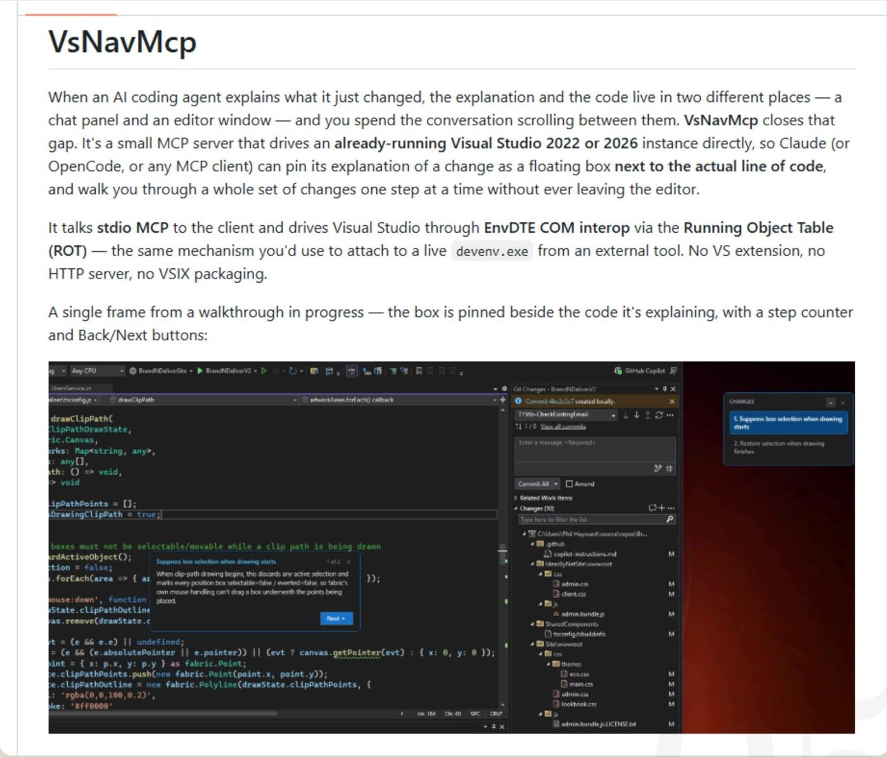

VsNavMcp
An MCP server that lets Claude pin each explanation beside the actual line in a running Visual Studio and step you through a change set. No plugin: it drives VS through EnvDTE COM interop and the Running Object Table. Built for, and used on, my day-job codebase.
github.com/pahayward/VsNavMCP →